Bhookmark UI skill · MIT
swap_da_skill gallery
A Claude Code skill that builds a website as a stage, not a stacked page. Below: the tour, then every example you can open and drag around.
21.5 s, with sound. Music by ende.app (CC BY 4.0).
The four kinds
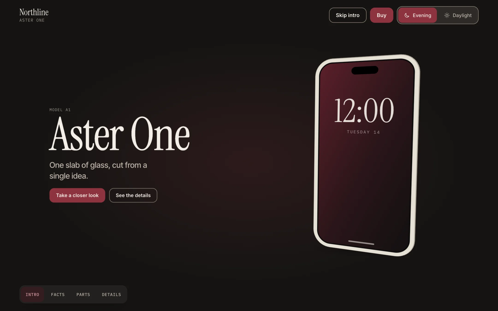
ProductOne thing to admire and buy. Pinned 3D stage, specs, compare, buy.
examples/aster-one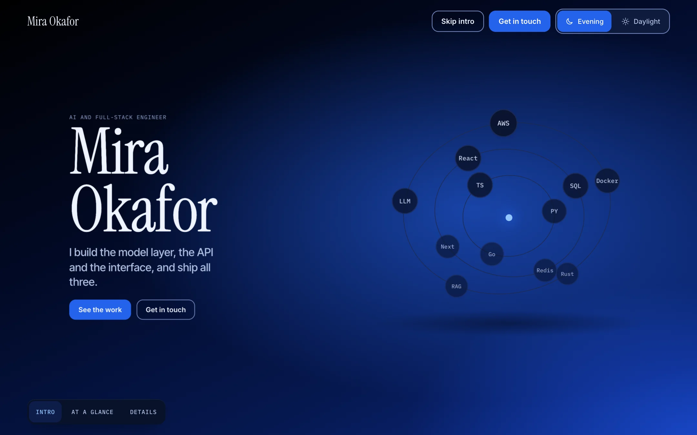
PortfolioA person and their work. A short stage, then the work.
examples/portfolio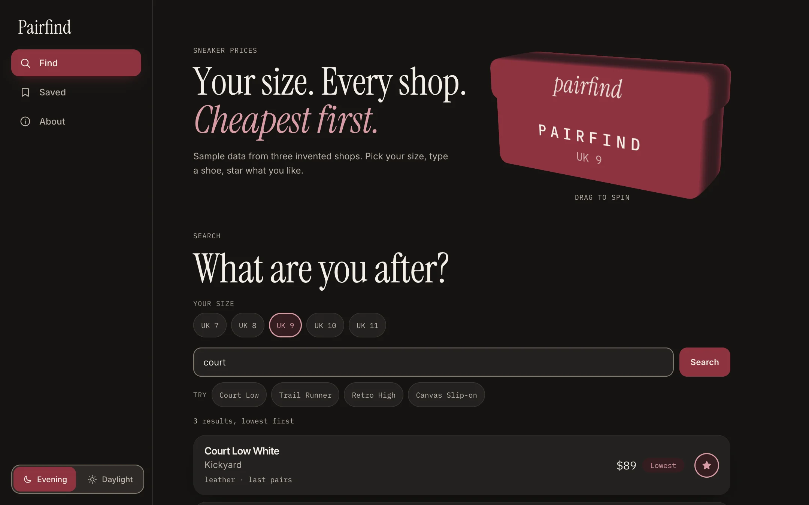
ToolOne job on the first screen. No stage. Saved items live in the browser.
examples/tool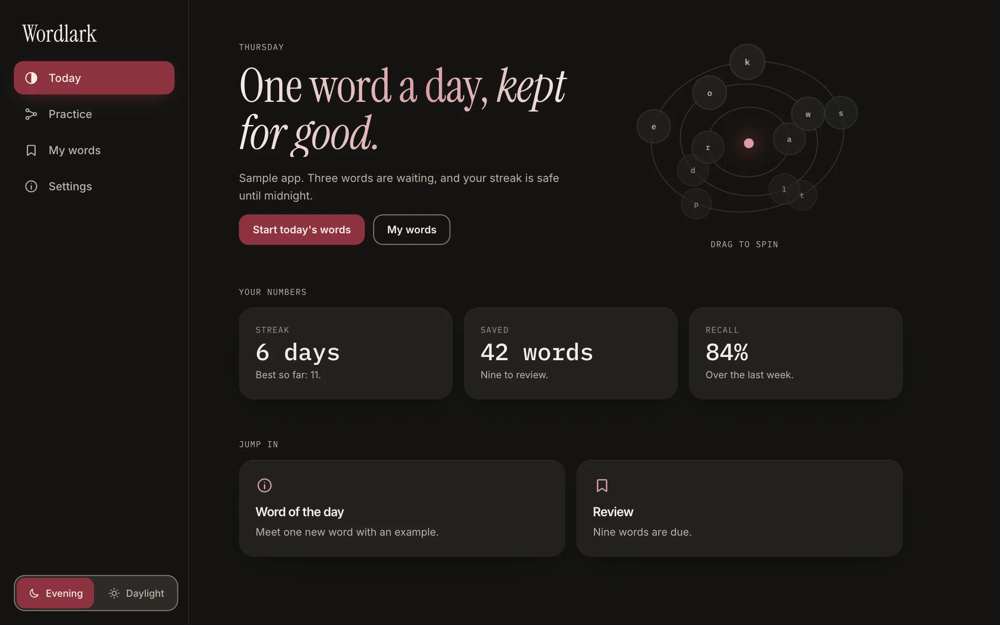
AppA daily product with progress. No stage, ever.
examples/appHero objects
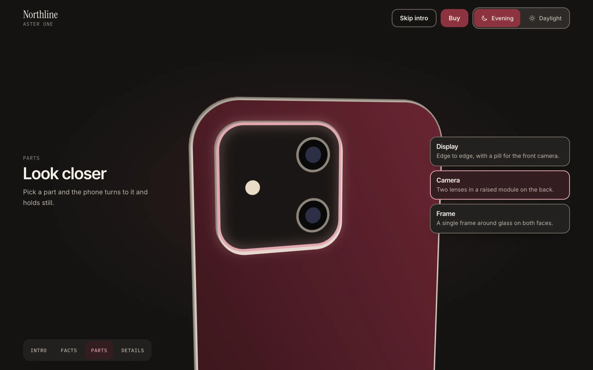
ExtrudeFocus and lock: click a part, the object turns to it.
object-extrude.js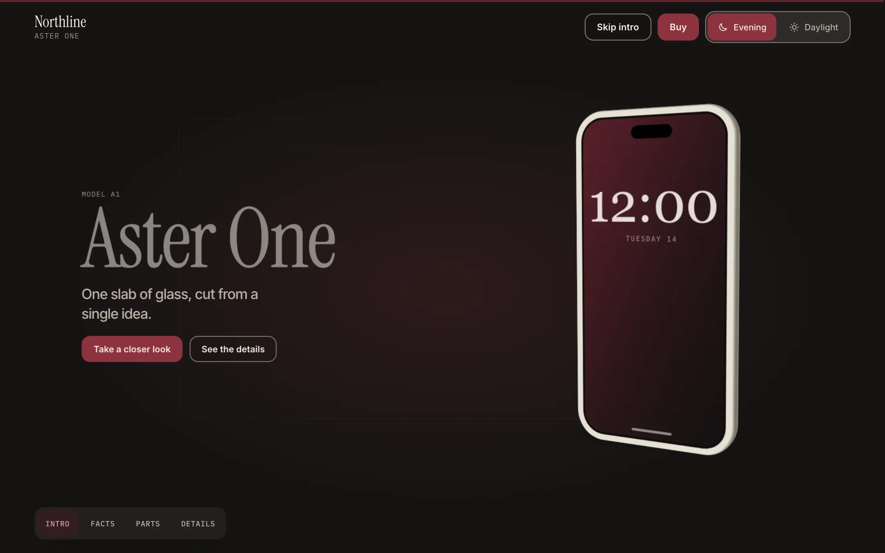
FramesA WebP turntable, loaded coarse to fine. 30 frames, 0.4 MB.
object-frames.js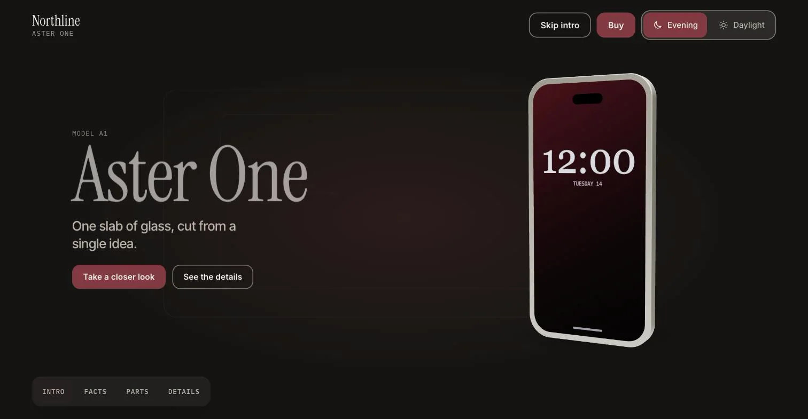
GLBA real model through three.js, loaded on demand. Pauses in a hidden tab.
object-glb.js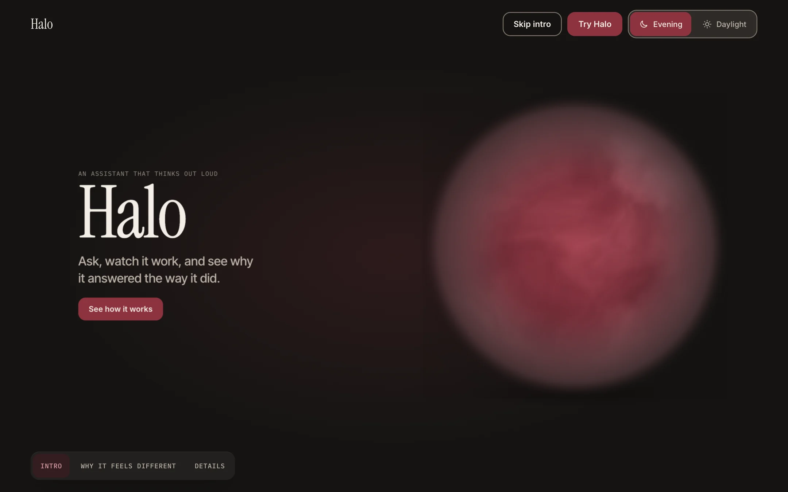
ShaderA raw WebGL orb, no library. Orbit chips are in the site kit too.
object-shader.jsTools
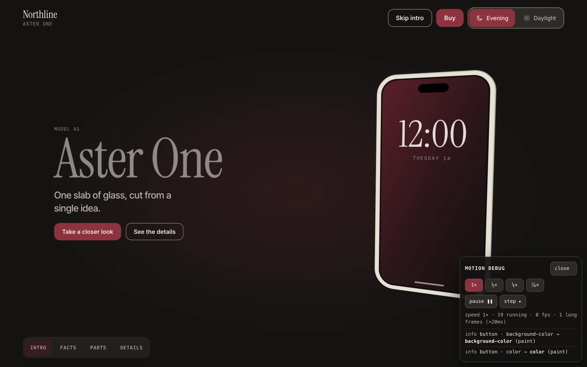
Motion debugSlow-motion, pause, frame-step. Opens with the URL flag.
?motion-debug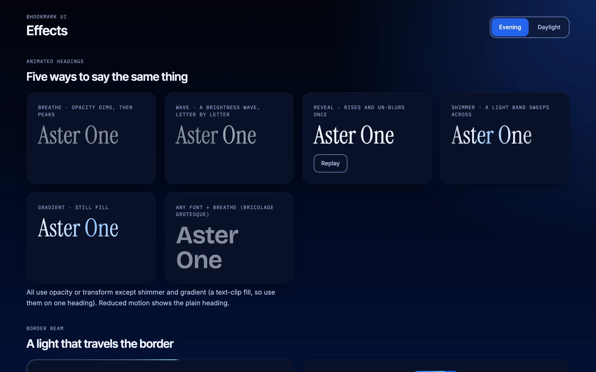
EffectsOptional. Animated headings, border beam. Off unless asked.
effects-demo.html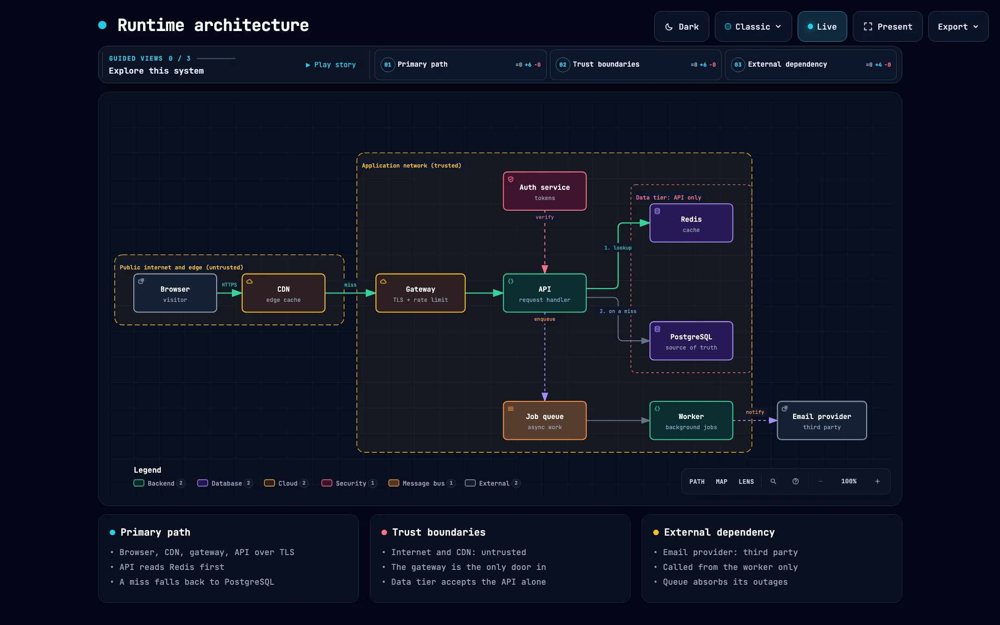
DiagramsOptional. An animated architecture diagram made with Archify.
optional-diagramsThe audit is a command, not a page: node skills/bhookmark-ui/assets/audit.mjs path/to/project